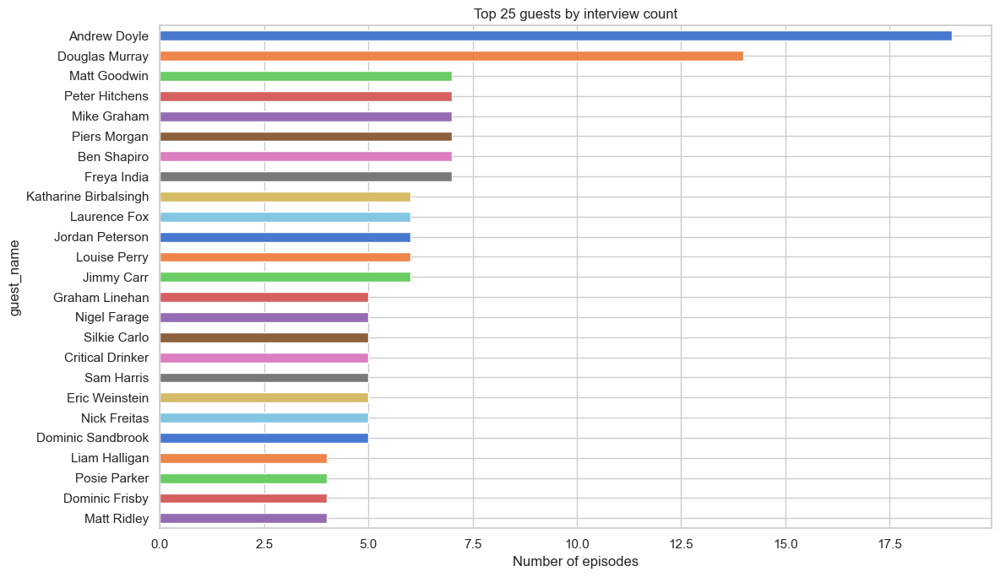
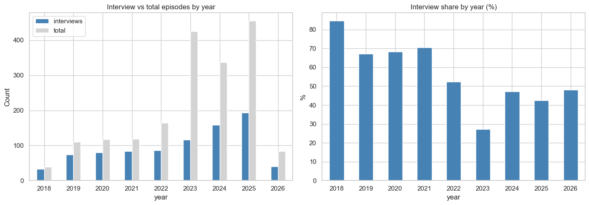
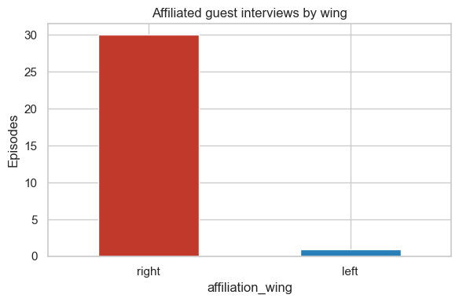
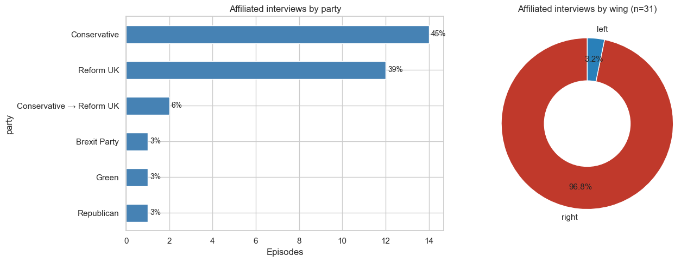
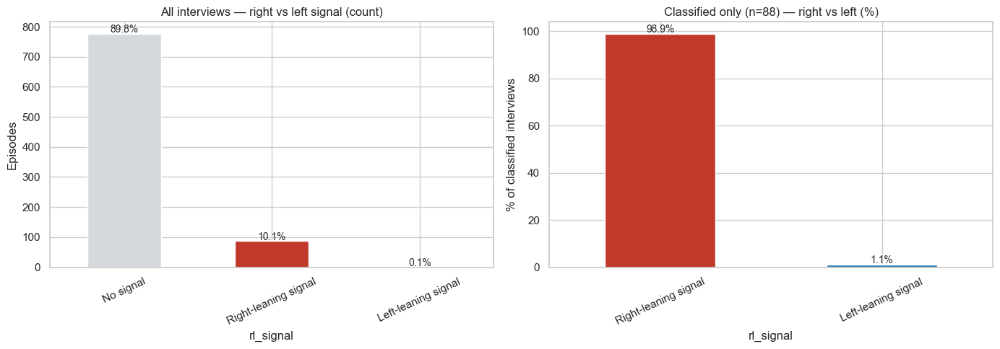
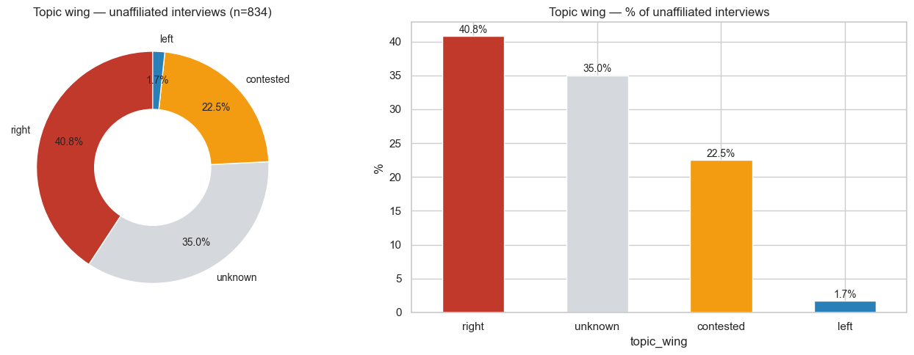
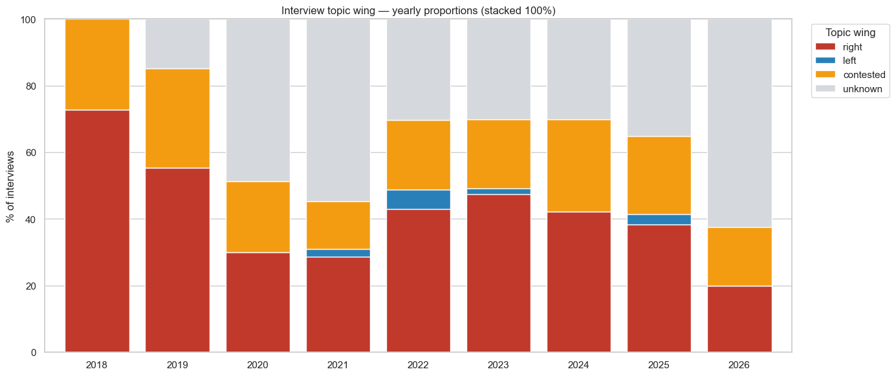

Identification and political bias analysis of guest interview episodes.
Guest extraction — regex patterns identify guest names from video titles
Interview classification — separate interviews from host-only content
Political party affiliation — curated dictionary of formal party affiliations
Interview stance — is the affiliated guest being challenged or endorsed?
Topic bias — for non-affiliated guests, is the topic right- or left-coded, and is the treatment sympathetic or critical?
CSV export — classified interview dataset for further analysis
Bias framework
Guest has party affiliation?
Analysis
Yes — affiliated with a right- or left-wing party
Is the guest being challenged or endorsed by the hosts?
No — no formal party affiliation
Is the guest discussing a right/left-coded topic — and is the treatment sympathetic or critical?
Methodology note: Party affiliations are factual (formal membership, elected office, candidacy, or official party roles). “Challenged vs endorsed” and “topic treatment” use automated NLP signals as starting points. A manual_review column is provided for human refinement.
0 — Setup & preprocessing
Show the code
import refrom collections import Counterimport pandas as pdimport numpy as npimport matplotlib.pyplot as pltimport seaborn as snsfrom nltk.sentiment.vader import SentimentIntensityAnalyzersns.set_theme(style="whitegrid")plt.rcParams["figure.figsize"] = (14, 5)
Total entries: 1,849
Date range: 2018-04-23 → 2026-03-01
By type:
type
video 1012
livestream 525
short 312
1 — Guest name extraction
Three dominant title formats carry guest names:
Pattern
Example
Era
Name on Topic
“Peter Hitchens on Crime”
2018–2020
Name: "Quote"
“Sir John Curtice: "Brexit was not about Left vs Right"”
2019–2021
Topic - Name
“The Debt Crisis No One’s Talking About - Sir Niall Ferguson”
2021–present
Topic with Name
“Venezuela: What’s Happening and Why With Daniel Di Martino”
occasional
Hosts (Konstantin Kisin, Francis Foster) are filtered out.
Show the code
HOSTS = {"konstantin kisin", "francis foster","konstantine kisin",}# Format labels / false positives that match name patterns but aren't guestsFALSE_POSITIVES = {"raw", "debate", "live", "news", "update", "trailer","our thoughts", "your questions", "special episode",}# Verbs and non-name words that indicate a sentence, not a nameSENTENCE_WORDS = {"gets", "destroys", "reveals", "exposes", "reacts", "explains","admits", "responds", "attacks", "defends", "confronts", "drops","wins", "loses", "breaks", "makes", "takes", "keeps", "stops","tries", "does", "says", "goes", "comes", "has", "had", "was","is", "are", "been", "being", "fact-checked",}# Honourifics / titles that can precede a nameTITLE_PREFIX =r"(?:(?:Sir|Dr|Dr\.|Prof|Professor|Baroness|Lord|Dame|Major|Captain|Rev|Bishop)\s+)?"# Core name pattern: capitalised words, allowing hyphens, apostrophes, periods# Also allows "of" for names like "Sargon of Akkad"NAME_WORD =r"[A-Z][a-zA-Z'\.'\-]+"NAME_PAT = TITLE_PREFIX + NAME_WORD +r"(?:\s+(?:of\s+)?"+ NAME_WORD +r"){0,4}"# Tighter name pattern for "Name on Topic" — max 3 words (avoids matching sentences)NAME_PAT_SHORT = TITLE_PREFIX + NAME_WORD +r"(?:\s+(?:of\s+)?"+ NAME_WORD +r"){0,2}"def _is_plausible_name(name: str) ->bool:"""Filter out false positives.""" lower = name.lower()if lower in HOSTS or lower in FALSE_POSITIVES:returnFalseiflen(name) <=2:returnFalse# Reject all-caps single words (format labels like RAW, DEBATE)if name.isupper() andlen(name.split()) ==1:returnFalse# Reject if any word (after the first) is a common verb → sentence, not a name words = name.split()for w in words[1:]:if w.lower() in SENTENCE_WORDS:returnFalsereturnTruedef extract_guest_name(title: str) ->str|None:""" Try each pattern in priority order. Return the first plausible guest name or None if no guest is detected. """ t = title.strip().strip('"').strip("'")# --- Pattern 1: "Topic - Guest Name" (post-2021 dominant) --- m = re.search(r'\s[-–—]\s+('+ NAME_PAT +r')\s*$', t)if m: name = m.group(1).strip()if _is_plausible_name(name):return name# --- Pattern 2: "Guest Name: 'Quote'" or "Guest Name: Statement" --- m = re.match(r'^('+ NAME_PAT +r')\s*[:]\s', t)if m: name = m.group(1).strip() words = name.split() skip = {"the", "a", "an", "this", "that", "how", "why", "what", "when","where", "is", "are", "our", "their", "his", "her", "its", "we","net", "labour", "brexit", "venezuela", "congratulations", "finally"}iflen(words) >=1and words[0].lower() notin skip and _is_plausible_name(name):return name# --- Pattern 3: "Guest Name on Topic" (2018-2020 dominant) ---# Use shorter name pattern to avoid matching sentences before "on" m = re.match(r'^('+ NAME_PAT_SHORT +r')\s+on\s+', t)if m: name = m.group(1).strip()if _is_plausible_name(name):return name# --- Pattern 4: "Topic ... with Guest Name" --- m = re.search(r'\b[Ww]ith\s+('+ NAME_PAT +r')\s*$', t)if m: name = m.group(1).strip()if _is_plausible_name(name):return namereturnNonedf["guest_name"] = df["title"].apply(extract_guest_name)df["is_interview"] = df["guest_name"].notna()n_int = df["is_interview"].sum()print(f"Interviews detected: {n_int:,} / {len(df):,} ({n_int/len(df):.1%})")print(f"Non-interview: {len(df) - n_int:,}")
=== Oldest interviews (validation) ===
published_date type guest_name title
2018-04-23 video Gideon Rachman Gideon Rachman on Trump, Russia, China, Israel, Jeremy Corbyn and Journalism
2018-04-30 video Andrew Doyle Andrew Doyle on Free Speech, Political Correctness & Gender Pay Gap
2018-05-04 video Andrew Doyle Andrew Doyle on Privilege
2018-05-07 video Liam Halligan Liam Halligan on Russia, Media, Liberal Bias and Brexit
2018-05-14 video Dr Pippa Malmgren Dr Pippa Malmgren on Populism, Russia and AI
2018-05-21 video David Pilling David Pilling on the Growth Delusion and Good News about Africa
2018-05-28 video Peter Tatchell Peter Tatchell on Human Rights, Free Speech and Political Reform
2018-06-04 video Rory Sutherland Rory Sutherland on the Logic Trap, Humour & Free Speech
2018-06-10 video Dr Joanna Williams Dr Joanna Williams on Feminism, #MeToo & the Gender Pay Gap
2018-06-18 video Dr Linda Yueh Dr Linda Yueh on Inequality, China and the End of Poverty
2018-06-24 video Jeremy Shapiro Jeremy Shapiro on Trump, Trident, Israel & Iran
2018-07-02 video Brendan O'Neill Brendan O'Neill on Free Speech, Identity Politics, Grenfell & Social Media
2018-07-09 video Dr Diana Fleischman Red Pill, Bad Boys & Evolutionary Psychology - Dr Diana Fleischman
2018-07-15 video Claire Fox Claire Fox on Generation Snowflake, Free Speech and Debate
2018-07-23 video Sargon of Akkad Sargon of Akkad on Liberalism, Intersectionality & Immigration
2018-07-29 video Iain Dale Iain Dale on Conservatism, Immigration, Tax & the NHS
2018-08-06 video Scott Capurro Scott Capurro on Comedy, Offence and Politics in 2018
2018-08-12 video Sam Bowman Sam Bowman on Libertarianism, Neoliberalism, the Housing Crisis & Drugs
2018-08-19 video Toby Young Toby Young on Journalism, Education, Public Shaming and Offence Archeology
2018-09-03 video Tom Slater Tom Slater on Free Speech, Brexit, Immigration & Communism
=== Newest interviews (validation) ===
published_date type guest_name title
2026-01-30 video Laila Cunningham "I don't think foreign nationals should get any benefits." - Laila Cunningham
2026-02-02 video Robert Jenrick Why I Left the Conservative Party - Robert Jenrick
2026-02-03 video Robert Jenrick We've Failed To Build Anything - Robert Jenrick
2026-02-04 short Jeremy Boreing The Dangers of Social Media - Jeremy Boreing
2026-02-06 short James McCann Why Kneecap Is Better Than ISIS - James McCann
2026-02-08 video Mike Graham They Tried To Cancel Me But Now I'm Free - Mike Graham
2026-02-11 video Eric Weinstein Is This The End of Humanity? - Eric Weinstein
2026-02-11 video Eric Weinstein We’re Playing With Fire - Eric Weinstein
2026-02-13 video Mike Graham Mike Graham on Student Loans
2026-02-15 video Mike Graham Britain Failed by Both Parties - Mike Graham
2026-02-15 video Scott Galloway You've Been Lied To About Masculinity - Scott Galloway
2026-02-15 video Mike Graham London Has Changed - Mike Graham
2026-02-18 short Dr Rhonda Patrick This is a Public Health Crisis - Dr Rhonda Patrick
2026-02-18 video Dr. Rhonda Patrick How Microplastics Are Ruining Your Health And What You Can Do About It - Dr. Rhonda Patrick
2026-02-19 video Scott Galloway The Crisis Facing Young Men - Scott Galloway
2026-02-20 video Dr. Rhonda Patrick Avoid Black Plastic - Dr. Rhonda Patrick
2026-02-22 video James Sexton How Not To Ruin Your Marriage - World's Leading Divorce Expert - James Sexton
2026-02-25 video Dr. Rhonda Patrick Filter Your Water - Dr. Rhonda Patrick
2026-02-25 short Jeremy Boreing 'May God Bless Erika Kirk.' - Jeremy Boreing
2026-02-25 video Freya India How the Internet Ruins Young People - Freya India
Show the code
# Non-interviews — check for false negatives (missed guests)non_int = df[(~df["is_interview"]) & (df["type"] =="video")]print(f"Non-interview videos: {len(non_int):,}\n")print("Sample (check for missed guest names):")for _, row in non_int.sample(min(40, len(non_int)), random_state=42).sort_values("published_date").iterrows():print(f" {row['published_date'].date()}{row['title'][:100]}")
Non-interview videos: 581
Sample (check for missed guest names):
2018-12-12 TRIGGERnometry co-host Konstantin Kisin does woke comedy
2019-09-13 How ISIS Fuelled Populism
2021-11-09 JOIN US at the Leicester Square Theatre | 11th December
2022-02-12 War in Ukraine? Farage vs. Russian
2022-03-12 In Russia The Individual is Expendable
2022-05-31 Why Women Love a Bad Boy
2022-06-07 "We Must Protect the West for Our Children" - Konstantin Kisin
2022-11-01 TRIGGERnometry DESTROYS New York
2022-12-19 Why Putin’s Plan Might Be Doomed
2023-01-30 How Wokeism Works | Theo Von
2023-02-07 Why Al Sharpton is Wrong About UK vs US Policing - Francis Foster
2023-02-20 The REAL Reason Russians Support Putin - Konstantin Kisin
2023-04-04 Live TV Host SHOCKED By Comedian...
2023-06-13 4 Minutes of Exceptional Financial Advice
2023-06-19 Konstantin Kisin and Tom Bilyeu React to Twitter Censorship
2023-08-03 How Transgender Athletes Are The Newest Cheating Scandal!
2023-10-03 The Dangers of Historical Amnesia
2023-10-13 Critical Race Theory Made Me Suicidal
2023-10-16 Has the Military Gone Woke? Joe Rogan & TRIGGERnometry
2024-01-05 The Mindset for Success in 2024 - Chris Williamson and Konstantin Kisin
2024-01-19 Comedian Reacts to Conspiracy Theorists - Francis Foster
2024-02-20 Tucker Carlson And The Woke Right - Konstantin Kisin
2024-03-09 The Culture War Matters: Here is Why - Konstantin Kisin
2025-02-07 DEBATE: Is Diversity a Strength?
2025-06-02 Why Rome was unstoppable
2025-07-15 Stop talking Britain down
2025-08-02 I Look Like A Jew Get Me Out Of Here
2025-08-04 Dispatches from Soviet Britain - Konstantin Kisin
2025-08-20 Asking Benjamin Netanyahu The Tough Questions
2025-08-22 Wake Before It’s Too Late
2025-09-01 Careful What You Click On - Konstantin Kisin
2025-10-08 Why They'll Never Be Honest About Islamist Violence
2025-11-28 I Exposed The BBC's Anti-Trump Bias
2025-12-04 How To Protect Your Kids
2025-12-19 Our Thoughts on 2025
2025-12-21 Meghan Markle, Brigitte Macron, Piers Morgan and Feminism - Christina P
2026-01-04 The Truth About Venezuela
2026-01-17 Why the World's Gone Crazy!
2026-01-29 Congratulations, You Taxed The Rich
2026-02-21 Men Need Relationships More Than Women
Unique guests: 536
Total interview entries: 865
Top 30 guests by appearance count:
guest_name
Andrew Doyle 19
Douglas Murray 14
Matt Goodwin 7
Peter Hitchens 7
Mike Graham 7
Piers Morgan 7
Ben Shapiro 7
Freya India 7
Katharine Birbalsingh 6
Laurence Fox 6
Jordan Peterson 6
Louise Perry 6
Jimmy Carr 6
Graham Linehan 5
Nigel Farage 5
Silkie Carlo 5
Critical Drinker 5
Sam Harris 5
Eric Weinstein 5
Nick Freitas 5
Dominic Sandbrook 5
Liam Halligan 4
Posie Parker 4
Dominic Frisby 4
Matt Ridley 4
Dr Sebastian Gorka 4
Glenn Greenwald 4
Adam Carolla 4
Mark Normand 4
Bassem Youssef 4
Show the code
top_n =25top_guests = guest_counts.head(top_n)fig, ax = plt.subplots(figsize=(12, 7))top_guests.plot.barh(ax=ax, color=sns.color_palette("muted", top_n))ax.invert_yaxis()ax.set_xlabel("Number of episodes")ax.set_title(f"Top {top_n} guests by interview count")plt.tight_layout()plt.show()

Show the code
# Interviews over timeyearly = df.groupby("year")["is_interview"].agg(["sum", "count"])yearly.columns = ["interviews", "total"]yearly["pct"] = yearly["interviews"] / yearly["total"] *100fig, (ax1, ax2) = plt.subplots(1, 2, figsize=(14, 5))yearly[["interviews", "total"]].plot.bar(ax=ax1, color=["steelblue", "lightgrey"])ax1.set_title("Interview vs total episodes by year")ax1.set_ylabel("Count")ax1.tick_params(axis="x", rotation=0)yearly["pct"].plot.bar(ax=ax2, color="steelblue")ax2.set_title("Interview share by year (%)")ax2.set_ylabel("%")ax2.tick_params(axis="x", rotation=0)plt.tight_layout()plt.show()

3 — Political party affiliation
Curated dictionary of formal political affiliations — party membership, elected office, candidacy, or official party roles. Editorial leanings without formal ties are not included here (they are handled in §5 via topic analysis).
Interviews with party affiliation: 31
Interviews without affiliation: 834
--- Affiliated guests matched ---
guest_name party affiliation_wing episodes
Nigel Farage Reform UK right 5
Laila Cunningham Reform UK right 4
Geoff Norcott Conservative right 3
Iain Dale Conservative right 3
Mahyar Tousi Reform UK right 3
Steve Hilton Conservative right 3
Liz Truss Conservative right 2
Robert Jenrick Conservative → Reform UK right 2
Claire Fox Brexit Party right 1
Kemi Badenoch Conservative right 1
Munira Mirza Conservative right 1
Peter Tatchell Green left 1
Suella Braverman Conservative right 1
Vivek Ramaswamy Republican right 1
Show the code
# Wing breakdown of affiliated interviewswing_counts = affiliated["affiliation_wing"].value_counts()fig, ax = plt.subplots(figsize=(6, 4))colors = {"right": "#c0392b", "left": "#2980b9", "centre": "#f39c12"}wing_counts.plot.bar( ax=ax, color=[colors.get(w, "grey") for w in wing_counts.index],)ax.set_title("Affiliated guest interviews by wing")ax.set_ylabel("Episodes")ax.tick_params(axis="x", rotation=0)plt.tight_layout()plt.show()

Show the code
# Proportion of affiliated interviews by partyparty_counts = affiliated.groupby("party").size().sort_values(ascending=False)party_pct = (party_counts / party_counts.sum() *100).round(1)fig, (ax1, ax2) = plt.subplots(1, 2, figsize=(14, 5))# By party (count + %)party_counts.plot.barh(ax=ax1, color="steelblue")ax1.set_xlabel("Episodes")ax1.set_title("Affiliated interviews by party")ax1.invert_yaxis()for bar, pct_val inzip(ax1.patches, party_pct.values): ax1.text(bar.get_width() +0.1, bar.get_y() + bar.get_height() /2,f"{pct_val:.0f}%", va="center", fontsize=10)# Wing as donutwing_aff = affiliated["affiliation_wing"].value_counts()w_colors = [colors.get(w, "grey") for w in wing_aff.index]wedges, texts, autotexts = ax2.pie( wing_aff.values, labels=wing_aff.index, colors=w_colors, autopct="%1.1f%%", startangle=90, pctdistance=0.75, textprops={"fontsize": 11},)centre = plt.Circle((0, 0), 0.50, fc="white")ax2.add_artist(centre)ax2.set_title(f"Affiliated interviews by wing (n={wing_aff.sum():,})")plt.tight_layout()plt.show()

4 — Interview stance: challenged vs endorsed
For guests with a political party affiliation, we classify whether the title/description framing endorses or challenges the guest’s position.
Automated signals: - Endorsing keywords in title — language that amplifies or validates the guest (“truth”, “exposes”, “reveals”, “finally”, “destroys”, “must watch”, “brilliant”) - Challenging keywords — language that questions or confronts (“wrong”, “debate”, “challenged”, “confronted”, “pushed back”) - VADER sentiment of title — positive compound scores tend to correlate with endorsement
These are indicators, not definitive classifications. The manual_review column should be used for final judgement.
Show the code
ENDORSING_TERMS = {"truth", "exposes", "reveals", "finally", "destroys", "must watch","brilliant", "based", "truth bombs", "wake up", "brave", "honest","incredible", "powerful", "important", "eye-opening", "eye opening","nails it", "spot on", "genius", "legendary", "epic","they don't want you", "they tried to cancel", "they can't cancel","admitted it", "called it", "was right",}CHALLENGING_TERMS = {"wrong", "debate", "challenged", "confronted", "pushed back","disagree", "heated", "grilled", "called out", "fact check","debunked", "controversial", "clash",}def classify_stance(row):"""Return 'endorsing', 'challenging', or 'neutral' based on title framing.""" title_lower =str(row["title"]).lower() desc_lower =str(row.get("description", "")).lower()[:500] # first 500 chars text = title_lower +" "+ desc_lower endorse_hits =sum(1for t in ENDORSING_TERMS if t in text) challenge_hits =sum(1for t in CHALLENGING_TERMS if t in text)if endorse_hits > challenge_hits:return"endorsing"elif challenge_hits > endorse_hits:return"challenging"return"neutral"df["stance"] = df.apply(classify_stance, axis=1)# Show stance breakdown for affiliated guests onlyaff_stance = affiliated.copy()aff_stance["stance"] = df.loc[aff_stance.index, "stance"]print("Stance classification for affiliated guests:")print(aff_stance["stance"].value_counts().to_string())print(f"\n--- Detail ---")for _, row in aff_stance.sort_values("published_date").iterrows():print(f" [{row['stance']:11s}] {row['affiliation_wing']:5s}{row['guest_name']:25s}{row['title'][:70]}")
Stance classification for affiliated guests:
stance
neutral 26
endorsing 5
--- Detail ---
[neutral ] left Peter Tatchell Peter Tatchell on Human Rights, Free Speech and Political Reform
[neutral ] right Claire Fox Claire Fox on Generation Snowflake, Free Speech and Debate
[endorsing ] right Iain Dale Iain Dale on Conservatism, Immigration, Tax & the NHS
[endorsing ] right Geoff Norcott Geoff Norcott on Conservative Comedy, Brexit & Free Speech
[neutral ] right Munira Mirza Munira Mirza on Multiculturalism, "Institutional Racism", "White Privi
[neutral ] right Geoff Norcott Geoff Norcott: "Why I'm a Working Class Conservative"
[neutral ] right Mahyar Tousi Mahyar Tousi: "The BLM Agenda is Communist"
[neutral ] right Iain Dale Why Can't We Just Get Along? - Iain Dale
[neutral ] right Nigel Farage Nigel Farage: "I Did More to Stop the Far Right Than Anyone"
[endorsing ] right Geoff Norcott Why Labour Keep Losing - Geoff Norcott
[neutral ] right Vivek Ramaswamy How Big Business Went Woke - Vivek Ramaswamy
[endorsing ] right Nigel Farage An Honest Conversation With Nigel Farage
[neutral ] right Nigel Farage Nigel Farage: "We're Heading for a Political Revolution"
[neutral ] right Steve Hilton Are Politicians Even in Control? - Steve Hilton
[endorsing ] right Suella Braverman Suella Braverman: “We Are Not in Control of Our Border”
[neutral ] right Liz Truss My 49 Days as Prime Minister - Liz Truss
[neutral ] right Nigel Farage Nigel Farage: Why Immigration Is So Taboo…
[neutral ] right Liz Truss Liz Truss: Do We Really Still Have a Democracy?
[neutral ] right Nigel Farage My Big Plan to Rescue Britain - Nigel Farage
[neutral ] right Kemi Badenoch We Deserved To Lose - Kemi Badenoch
[neutral ] right Iain Dale The Real Story of Margaret Thatcher - Iain Dale
[neutral ] right Steve Hilton How They Ruined California - Steve Hilton
[neutral ] right Mahyar Tousi LIVE Iran Update with Mahyar Tousi
[neutral ] right Mahyar Tousi Is the Regime Losing Control? - Mahyar Tousi
[neutral ] right Steve Hilton Big Economy, Bigger Problems - Steve Hilton
[neutral ] right Laila Cunningham "We're Governed By Cowards" - Reform Candidate For London Mayor - Lail
[neutral ] right Laila Cunningham "We've been led by political cowards." - Laila Cunningham
[neutral ] right Laila Cunningham "I feel we’ve lost that identity.” - Laila Cunningham
[neutral ] right Laila Cunningham "I don't think foreign nationals should get any benefits." - Laila Cun
[neutral ] right Robert Jenrick Why I Left the Conservative Party - Robert Jenrick
[neutral ] right Robert Jenrick We've Failed To Build Anything - Robert Jenrick
5 — Topic bias for non-affiliated guests
For interview episodes where the guest has no formal party affiliation, we assess:
Is the guest discussing a right-coded or left-coded topic?
Is the treatment sympathetic to that topic or critical of the opposing position?
Topic coding uses the 13-category classification from notebook 03.
Treatment uses a combination of title sentiment and framing-term matching.
Show the code
# Topic → wing mapping# Topics that are primarily discussed from a right-wing or left-wing frame# in mainstream UK/US political discourseTOPIC_WING = {# Right-coded: topics where the conservative/right position is the activist one"immigration_and_borders": "right","woke_and_cancel_culture": "right","free_speech_and_censorship": "right","islam_and_extremism": "right","trans_and_gender": "right","culture_war_general": "right",# Left-coded: topics where the progressive/left position is the activist one"climate_and_environment": "left",# Contested / cross-cutting: depend on framing"economy_and_cost_of_living": "contested","trump_and_us_politics": "contested","uk_politics": "contested","russia_ukraine_geopolitics": "contested","israel_and_middle_east": "contested",}def get_primary_topic_wing(topics_str):"""Return the dominant topic wing from pipe-delimited topics string."""if pd.isna(topics_str) or topics_str =="":return"unknown" topics = [t.strip() for t instr(topics_str).split("|")] wings = [TOPIC_WING.get(t, "unknown") for t in topics]# Priority: if any topic is right- or left-coded, use thatfor w in ["right", "left"]:if w in wings:return wif"contested"in wings:return"contested"return"unknown"df["topic_wing"] = df["topics"].apply(get_primary_topic_wing)# Show breakdown for unaffiliated interviewsunaffiliated = df[df["party"].isna() & df["is_interview"]].copy()print(f"Unaffiliated interviews: {len(unaffiliated):,}")print(f"\nTopic wing breakdown:")print(unaffiliated["topic_wing"].value_counts().to_string())
Unaffiliated interviews: 834
Topic wing breakdown:
topic_wing
right 340
unknown 292
contested 188
left 14
Show the code
# Treatment classification: sympathetic vs critical## Heuristic: For right-coded topics, does the title/description frame# treat the right position sympathetically ("immigration crisis",# "cancel culture is destroying") or critically ("why fears are overblown")?## We use the framing_score from notebook 03 as a starting signal:# framing_score > 0 → right-sympathetic framing# framing_score < 0 → left-sympathetic framing# framing_score == 0 → neutral / unclassifieddef classify_treatment(row):"""Classify how the topic is treated based on framing signals.""" topic_wing = row["topic_wing"] framing = row.get("framing_score", 0) vader = row.get("vader_composite", 0)if topic_wing =="unknown":return"unknown"if topic_wing =="right":# Right-coded topic: positive framing = sympathetic to right positionif framing >0:return"sympathetic_to_right"elif framing <0:return"critical_of_right"return"neutral"if topic_wing =="left":# Left-coded topic: negative framing score = sympathetic to leftif framing <0:return"sympathetic_to_left"elif framing >0:return"critical_of_left"return"neutral"if topic_wing =="contested":if framing >0:return"right_framing"elif framing <0:return"left_framing"return"neutral"return"unknown"df["topic_treatment"] = df.apply(classify_treatment, axis=1)print("Topic treatment for unaffiliated interviews:")print(df.loc[unaffiliated.index, "topic_treatment"].value_counts().to_string())
The charts above show raw episode counts. The following views show proportions — what share of interviews, guests, and yearly output each bias signal represents.
Show the code
# --- 1. Overall interview composition (all interviews) ---# Group bias categories into broader buckets for a readable pie chartdef broad_bucket(cat):if pd.isna(cat):returnNoneif"right_affiliated"in cat:return"Right-affiliated guest"if"left_affiliated"in cat:return"Left-affiliated guest"if cat =="right_topic_sympathetic":return"Right topic (sympathetic)"if cat =="right_topic_critical":return"Right topic (critical)"if cat =="left_topic_sympathetic":return"Left topic (sympathetic)"if cat =="left_topic_critical":return"Left topic (critical)"if"contested_right"in cat:return"Contested topic (right framing)"if"contested_left"in cat:return"Contested topic (left framing)"return"Unclassified"interviews_final["broad_bias"] = interviews_final["bias_category"].apply(broad_bucket)bucket_counts = interviews_final["broad_bias"].value_counts()bucket_colors = {"Right-affiliated guest": "#922b21","Right topic (sympathetic)": "#c0392b","Right topic (critical)": "#f5b7b1","Contested topic (right framing)": "#edbb99","Contested topic (left framing)": "#aed6f1","Left topic (sympathetic)": "#2980b9","Left topic (critical)": "#5499c7","Left-affiliated guest": "#1a5276","Unclassified": "#d5d8dc",}fig, (ax1, ax2) = plt.subplots(1, 2, figsize=(16, 6))# Pie — all interviewsax1.pie( bucket_counts.values, labels=bucket_counts.index, colors=[bucket_colors.get(b, "grey") for b in bucket_counts.index], autopct=lambda p: f"{p:.1f}%"if p >2else"", startangle=90, pctdistance=0.8, textprops={"fontsize": 9},)ax1.set_title("All interviews — bias composition", fontsize=12)# Pie — classified only (exclude unclassified)classified = bucket_counts.drop("Unclassified", errors="ignore")ax2.pie( classified.values, labels=classified.index, colors=[bucket_colors.get(b, "grey") for b in classified.index], autopct=lambda p: f"{p:.1f}%", startangle=90, pctdistance=0.8, textprops={"fontsize": 9},)ax2.set_title("Classified interviews only — bias composition", fontsize=12)plt.tight_layout()plt.show()print(f"\nClassified: {classified.sum():,} episodes | Unclassified: {bucket_counts.get('Unclassified', 0):,} episodes")
# --- 2. Right vs left signal — simplified proportion ---# Collapse all categories into right-leaning / left-leaning / neutral-unknowndef right_left_signal(cat):if pd.isna(cat):returnNoneifany(k in cat for k in ["right_affiliated", "right_topic_sympathetic", "contested_right"]):return"Right-leaning signal"ifany(k in cat for k in ["left_affiliated", "left_topic_sympathetic", "contested_left"]):return"Left-leaning signal"ifany(k in cat for k in ["right_topic_critical", "left_topic_critical"]):return"Cross-cutting"return"No signal"interviews_final["rl_signal"] = interviews_final["bias_category"].apply(right_left_signal)rl_counts = interviews_final["rl_signal"].value_counts()rl_colors = {"Right-leaning signal": "#c0392b","Left-leaning signal": "#2980b9","Cross-cutting": "#f39c12","No signal": "#d5d8dc",}fig, (ax1, ax2) = plt.subplots(1, 2, figsize=(14, 5))# All interviewsrl_counts.plot.bar( ax=ax1, color=[rl_colors.get(c, "grey") for c in rl_counts.index],)ax1.set_title("All interviews — right vs left signal (count)")ax1.set_ylabel("Episodes")ax1.tick_params(axis="x", rotation=25)# Percentage labels on barsfor bar in ax1.patches: h = bar.get_height() pct = h /len(interviews_final) *100 ax1.text(bar.get_x() + bar.get_width() /2, h +3, f"{pct:.1f}%", ha="center", fontsize=10)# Classified only (exclude "No signal")rl_classified = rl_counts.drop("No signal", errors="ignore")total_classified = rl_classified.sum()rl_pct = (rl_classified / total_classified *100).round(1)rl_pct.plot.bar( ax=ax2, color=[rl_colors.get(c, "grey") for c in rl_pct.index],)ax2.set_title(f"Classified only (n={total_classified:,}) — right vs left (%)")ax2.set_ylabel("% of classified interviews")ax2.tick_params(axis="x", rotation=25)for bar, pct_val inzip(ax2.patches, rl_pct.values): ax2.text(bar.get_x() + bar.get_width() /2, bar.get_height() +0.5,f"{pct_val:.1f}%", ha="center", fontsize=10)plt.tight_layout()plt.show()

Show the code
# --- 3. Topic wing proportions for unaffiliated guest interviews ---unaff_topic = df.loc[unaffiliated.index, "topic_wing"].value_counts()unaff_topic_pct = (unaff_topic / unaff_topic.sum() *100).round(1)wing_colors = {"right": "#c0392b", "left": "#2980b9","contested": "#f39c12", "unknown": "#d5d8dc",}fig, (ax1, ax2) = plt.subplots(1, 2, figsize=(14, 5))# Donut chartwedges, texts, autotexts = ax1.pie( unaff_topic.values, labels=unaff_topic.index, colors=[wing_colors.get(w, "grey") for w in unaff_topic.index], autopct="%1.1f%%", startangle=90, pctdistance=0.75, textprops={"fontsize": 10},)centre_circle = plt.Circle((0, 0), 0.50, fc="white")ax1.add_artist(centre_circle)ax1.set_title(f"Topic wing — unaffiliated interviews (n={unaff_topic.sum():,})")# Bar with % labelsunaff_topic_pct.plot.bar( ax=ax2, color=[wing_colors.get(w, "grey") for w in unaff_topic_pct.index],)ax2.set_title("Topic wing — % of unaffiliated interviews")ax2.set_ylabel("%")ax2.tick_params(axis="x", rotation=0)for bar, pct_val inzip(ax2.patches, unaff_topic_pct.values): ax2.text(bar.get_x() + bar.get_width() /2, bar.get_height() +0.5,f"{pct_val:.1f}%", ha="center", fontsize=10)plt.tight_layout()plt.show()

Show the code
# --- 4. Topic wing proportions over time (stacked 100% bar) ---interviews_with_year = interviews_final.copy()interviews_with_year["topic_wing"] = df.loc[interviews_with_year.index, "topic_wing"]yearly_wings = pd.crosstab( interviews_with_year["year"], interviews_with_year["topic_wing"], normalize="index",) *100# Reorder columns for consistent stackingcol_order = [c for c in ["right", "left", "contested", "unknown"] if c in yearly_wings.columns]yearly_wings = yearly_wings[col_order]wing_colors_list = [wing_colors.get(c, "grey") for c in col_order]fig, ax = plt.subplots(figsize=(14, 6))yearly_wings.plot.bar( stacked=True, ax=ax, color=wing_colors_list, width=0.8, edgecolor="white",)ax.set_title("Interview topic wing — yearly proportions (stacked 100%)")ax.set_ylabel("% of interviews")ax.set_xlabel("")ax.tick_params(axis="x", rotation=0)ax.legend(title="Topic wing", bbox_to_anchor=(1.02, 1), loc="upper left")ax.set_ylim(0, 100)plt.tight_layout()plt.show()

Show the code
# --- 5. Unique guest proportions (avoids repeat-guest inflation) ---# For each unique guest, assign their dominant bias signal across all appearancesguest_bias = ( interviews_final.groupby("guest_name")["bias_category"] .agg(lambda x: x.mode().iloc[0] iflen(x.mode()) >0else"unclassified") .reset_index(name="dominant_bias"))guest_bias["rl_signal"] = guest_bias["dominant_bias"].apply(right_left_signal)guest_rl_counts = guest_bias["rl_signal"].value_counts()guest_rl_pct = (guest_rl_counts / guest_rl_counts.sum() *100).round(1)fig, (ax1, ax2) = plt.subplots(1, 2, figsize=(14, 5))# All unique guestsguest_rl_counts.plot.bar( ax=ax1, color=[rl_colors.get(c, "grey") for c in guest_rl_counts.index],)ax1.set_title(f"Unique guests (n={len(guest_bias):,}) — bias signal")ax1.set_ylabel("Guests")ax1.tick_params(axis="x", rotation=25)for bar in ax1.patches: h = bar.get_height() pct = h /len(guest_bias) *100 ax1.text(bar.get_x() + bar.get_width() /2, h +1, f"{pct:.1f}%", ha="center", fontsize=10)# Classified unique guests onlyguest_classified = guest_rl_counts.drop("No signal", errors="ignore")guest_classified_pct = (guest_classified / guest_classified.sum() *100).round(1)guest_classified_pct.plot.bar( ax=ax2, color=[rl_colors.get(c, "grey") for c in guest_classified_pct.index],)ax2.set_title(f"Classified guests only (n={guest_classified.sum():,}) — bias signal (%)")ax2.set_ylabel("% of classified guests")ax2.tick_params(axis="x", rotation=25)for bar, pct_val inzip(ax2.patches, guest_classified_pct.values): ax2.text(bar.get_x() + bar.get_width() /2, bar.get_height() +0.5,f"{pct_val:.1f}%", ha="center", fontsize=10)plt.tight_layout()plt.show()print(f"\nUnique guests with right-leaning signal: {guest_rl_counts.get('Right-leaning signal', 0):,}")print(f"Unique guests with left-leaning signal: {guest_rl_counts.get('Left-leaning signal', 0):,}")print(f"Unique guests unclassified: {guest_rl_counts.get('No signal', 0):,}")
Unique guests with right-leaning signal: 48
Unique guests with left-leaning signal: 1
Unique guests unclassified: 487